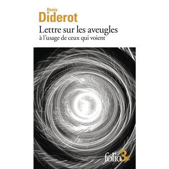

14:35 · 2 OPERE
I fumi dell'ideologia e l'allontanamento dal mondo.
Il filo del discorso
La difficoltà di mantenere un discorso razionale apre una riflessione su ideologia, isolamento e dipendenza dal potere. Dr Divago distingue la ragione rivolta al significato dalla sola capacità strumentale e richiama diversi autori per descrivere una socialità frammentata. Shakespeare e il titolo della Lettera sui ciechi accompagnano il percorso sul vuoto di senso e sul consumo come identità. Nel finale il riferimento a Platone collega la buona vita alla virtù e propone questa relazione come criterio per interpretare la distanza fra individuo e realtà.
I libri nel discorso

Giulio Cesare
Note sul riferimento
Copertina: Feltrinelli · Universale Economica I Classici · 2013
Copertina autentica dell’edizione di riferimento, non attribuita all’esemplare del video.
Shakespeare e Giulio Cesare sono nominati attorno al richiamo alla ragione e alle bestie.

Lettera sui ciechi per quelli che ci vedono
Identificazione probabile
Note sul riferimento
Copertina dell’edizione francese: Gallimard · Folio 4042 · 2024 · edizione francese
Copertina Gallimard, Folio 4042, edizione francese del 2024, ISBN 9782073073587. Il titolo della biblioteca è quello italiano riscontrato in catalogo; l’immagine non identifica una traduzione o un esemplare citati nel video.
Il titolo della Lettera sui ciechi è evocato, senza autore; identificazione probabile riscontrata in catalogo.